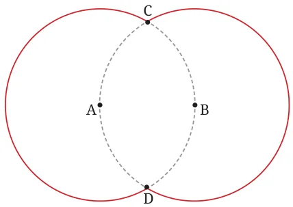
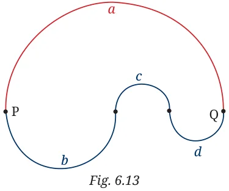
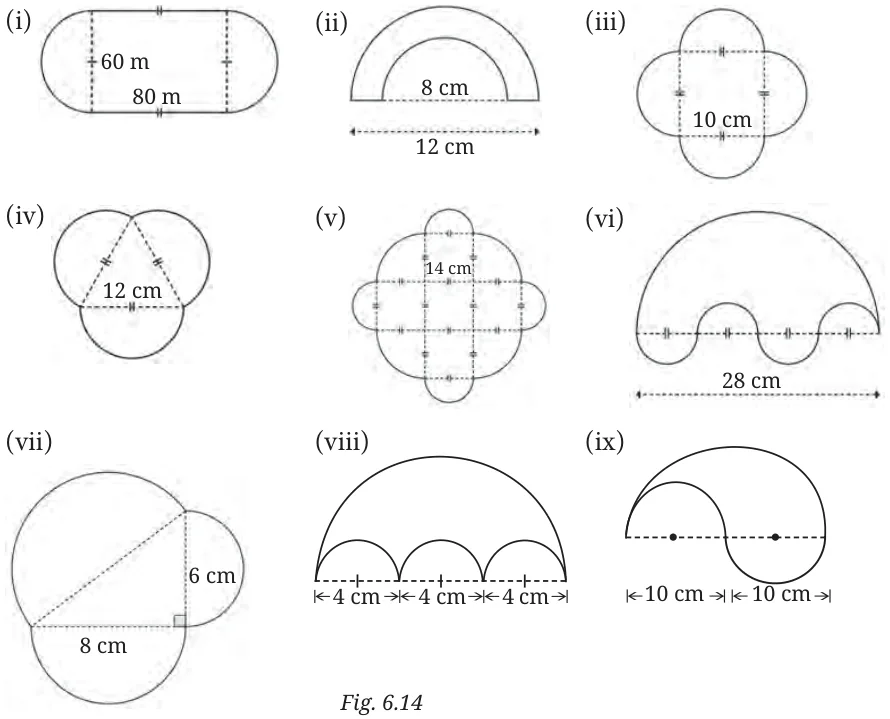

We close this section by looking at a sprinkling of interesting problems around the theme of perimeter. Example 1: Two circles of equal radius are located such that each circle passes through the centre of the other circle (Fig. 6.12). Given that the radius of each circle is r units, find the perimeter of the shape formed by the two circles in terms of r units. (Ignore the dotted portions that lie within the circles.)

Here, we have two congruent circles centered at A and B. Each one passes through the centre of the other one. The circles intersect at C and D. We need to find the total length of the two red arcs shown here, in terms of the radius r unit. Consider the triangle with vertices A, B, C. Since \(AB = r\), \(AC = r\), \(BC = r\), the triangle is equilateral, hence \(\angle CAB = 60 ^{\circ} = \angle CBA\).
Similarly \(\angle BAD = 60 ^{\circ} = \angle ABD\). It follows that \(\angle CAD = 120 ^{\circ} = \angle CBD\). Hence, each dotted arc is \(\frac{1}{3}\) of the circumference of the circle on which it lies. Hence, the total length of the two red arcs is \(2 \times \frac{2}{3} \times 2\pi r = \frac{8\pi r}{3}\).

Example 2: In Fig. 6.13, we see points P and Q and two paths connecting them. The first path is made up of the semicircle a. The other path is made up of three semicircles (b, c and d). Which path is longer? Choose one: (i) Path a is longer. (ii) Path \(b + c + d\) is longer.
The two paths have equal
length. (Try to answer this before reading on.)
Let us solve the problem using algebra. Let the radii of the semicircles a, b, c, d be denoted by a', b', c' and d'. Then the length of semicircle a is \(\frac{1}{2} (2\pi) a' = \pi a'\). Similarly, the lengths of the semicircles b, c, and d are \(\pi b'\), \(\pi c'\) and \(\pi d'\). So, the length of the second path is \(\pi(b' + c' + d')\), and that of the first path is \(\pi a'\). Which is bigger, b' + c' + d' or a' ? Do you see that neither one is bigger? They are equal! Because, the length of PQ is 2a' and it is also equal to \(2b' + 2c' + 2d'\). It follows that \(a' = b' + c' + d'\). Hence, the two paths have equal length!
Unless stated otherwise, use the approximation \(\frac{22}{7}\) for \(\pi\) .
- The perimeter of a circle is 44 cm. What is its radius?
- Calculate, correct to 3 significant figures, the circumference of a circle with: (i) radius 7 cm (ii) radius 10 cm (iii) radius 12 cm.
- Calculate the length of the arc of a circle if: (i) the radius is 3.5 cm and the angle at the centre is \(60 ^{\circ}\) , and (ii) the radius is 6.3 m and the angle at the centre is \(120 ^{\circ}\) .
- Find the perimeter of a sector (i.e., the curved portion as well as the two straight portions) of a circle of radius 14 cm and sector angle \(75 ^{\circ}\) .
- Find the perimeters of the following shapes (taking the arcs to be quarter or half or three-quarters of a circle, as appropriate) (Fig. 6.14i to 6.14ix):
